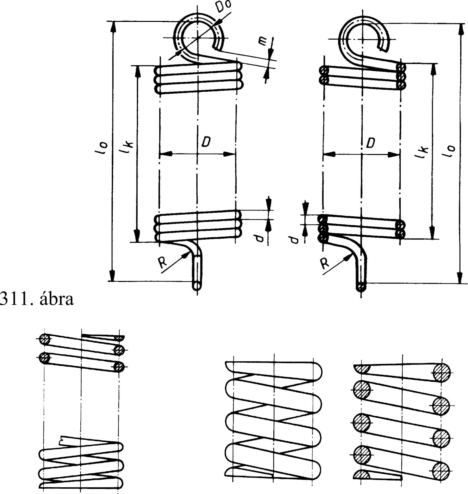

21. Rugók A húzó csavarrugó rugómenetei nyugalmi (terheletlen) állapotban összeérnek (311. ábra). Méretm egadás : A hordozómenetek száma: i A holtmenetek száma: 2 (a rögzítőszem kialakításához egy teljes menet szükséges) Közepes menetátmérő: D Huzalátmérő: d Szemátmérő: D0 Hajlítási sugár: R A rugó terheletlen hossza: 10 Rugóhossz a szemek nélkül: Ik A rögzítőszem nyitottsága: m A felhasznált huzalhossz: ls ahol: Ik=(i+l)d l0= (i+ l)d+2(D-d) I=Dn(i+2) 181. ábra A rögzítőszem irányát és az esetleges különleges kialakítást pótlólagosan meg kell adni. 21.2 Hengeres rugók ábrázolása 312. ábra A rugókat ábrázolhatjuk metszetben és nézetben, részletesen vagy jelképesen. A részletes ábrázolás során is több egyszerűsítést alkalmazunk. így pl. a csavarrugó menetének kontúrvonalát egyenes vonalakkal rajzoljuk, holott ez a valóságban nem egyenes hanem egy szinusz jellegű görbe. A hossztengelyük irányában terhelhető csavarrugók ábrázolási példáját mutatja a 29. táblázat. A vékony huzalból (lemezből) készült rugó szelvényét befeketíthetjük. Befeketítéssel a kb. 2 mm alatti huzalátmérőjű vagy lemezvastagságú rugószelvényt ábrázoljuk. A rugók menetemelkedését mérethelyesen rajzoljuk. A metszetben ábrázolt rugó rajzolásakor az egyik szelvényhez képest a kapcsolódó másik szelvényt fél menetosztással eltolva rajzoljuk meg (312. ábra). A részletesen kirajzolt rugó metszetében a huzal-szelvényeket 45°-os vonalkázással látjuk el. A rugóvégződéseket a valóságnak megfelelően ábrázoljuk. Összeállítási rajzokon általában elegendő, ha a rugót jelképesen ábrázoljuk. A metszetben ábrázolt összeállítási rajzon a rugót is metszetben, a nézeti képen ábrázolt összeállítási rajzon nézetben ábrázoljuk! Ha a rugómenetek száma meghaladja a négyet (azaz több mint négy), akkor nem szükséges valamennyi rugómenetet megrajzolni. Ekkor elegendő a csatlakozó menetvégek és még további egy-egy menet kirajzolása, a középrész rajzát elhagyhatjuk. Jelképes ábrázoláskor a rugót jelképező vonalat folytonos vastag vonallal rajzoljuk. vV) Megnevezés Ada t Működő menetek száma 5 Tekercselés iránya jobb Összes menetszám 6.5 Keménység — K ikészltés barnítva Ellenőrzőtüske átmérője — Ellenőrzőhüvely 30.5 Kiterített hossz s 551.5 90 20 0 3 fel K t 1 L 313. ábra 29. táblázat 16.1.2. Hengeres rugók műhelyrajza A hengeres csavarrugót a gyártáshoz pontosan meg kell határozni.. Az így meghatározott rugót műhelyrajzon ábrázolják (313. ábra). A műhelyrajzon kitérnek a rugó kialakítására, annak műszaki feltételeire (pl. tűrésre, hőkezelésére) és pontosan kiszerkesztik a rugóvégek kialakítását, annak kapcsolatát a csatlakozó alkatrészhez. Attól függően, hogy a beépítésre kerülő rugót a belső vagy a külső átmérőjén vezetik-e meg , a belső, ill. a külső átmérőjét kell beméretezni. A gyártás során ezt a méretet kell tartani. Hossztengelyük irányában terhelhető csavarrugók ábrázolása Hengeres csavarrugó nyomórugó a rugó ábrázolása részletesen jelképesen nézetben metszetben (EQ 0 tó ■ t 93
